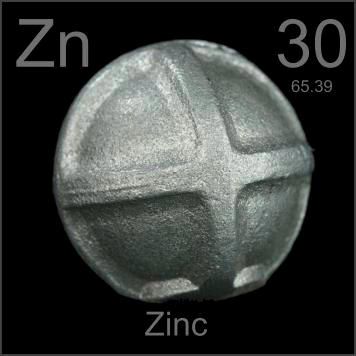

HOME
PREVIOUS
NEXT

Zinc
Atomic Weight: 65.38
Density: 7.14 g/cm3
Melting Point: 419.53 °C
Boiling Point: 907 °C
Sacrificial zinc anodes are used to protect steel tanks, rails and ship hulls from rusting. Since zinc oxidizes more easily than iron, it corrodes first. When the anode is mostly consumed, it can simply be replaced.